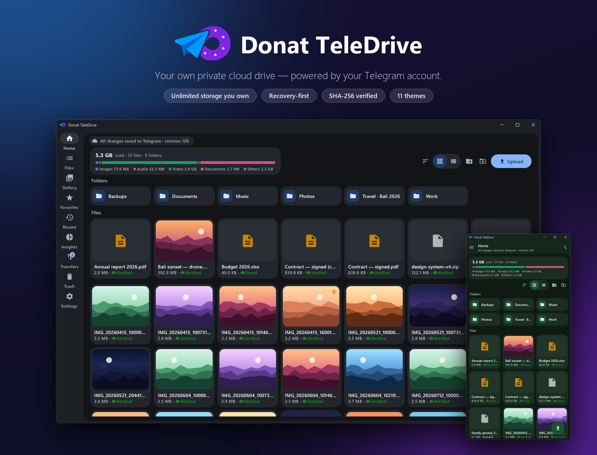
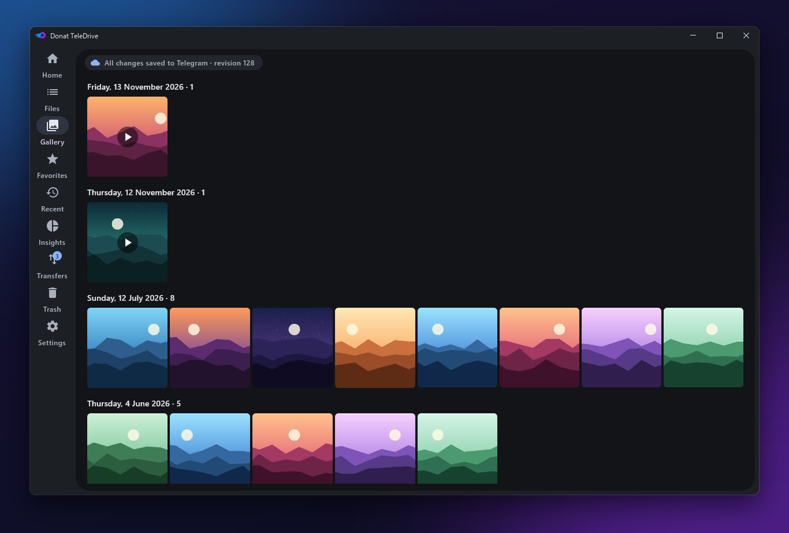
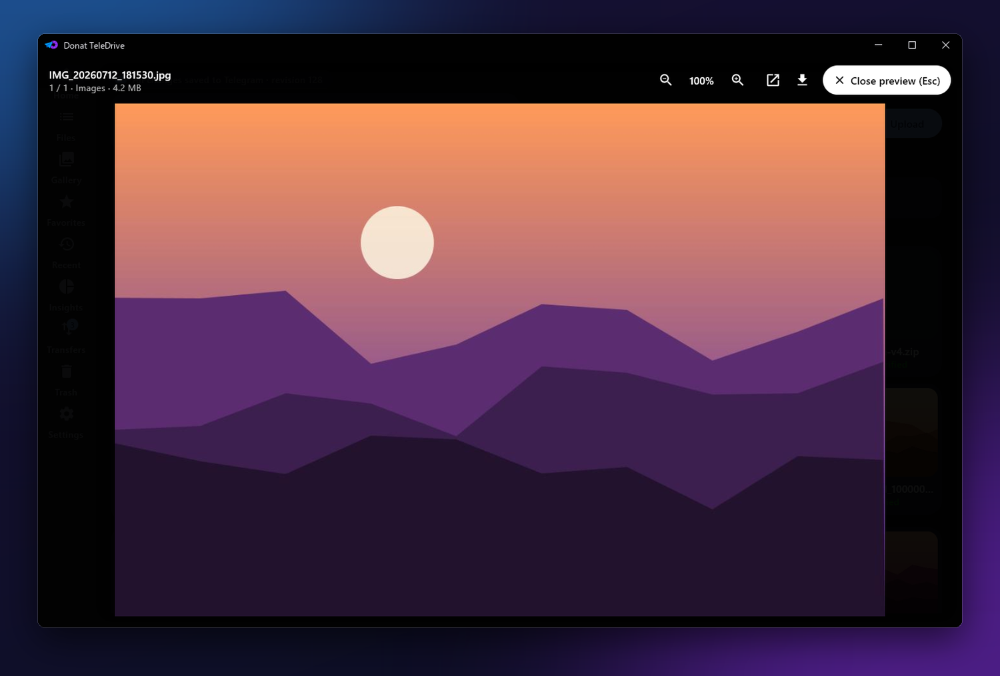
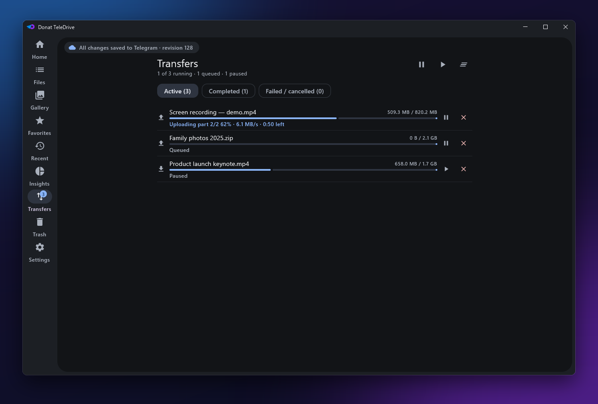
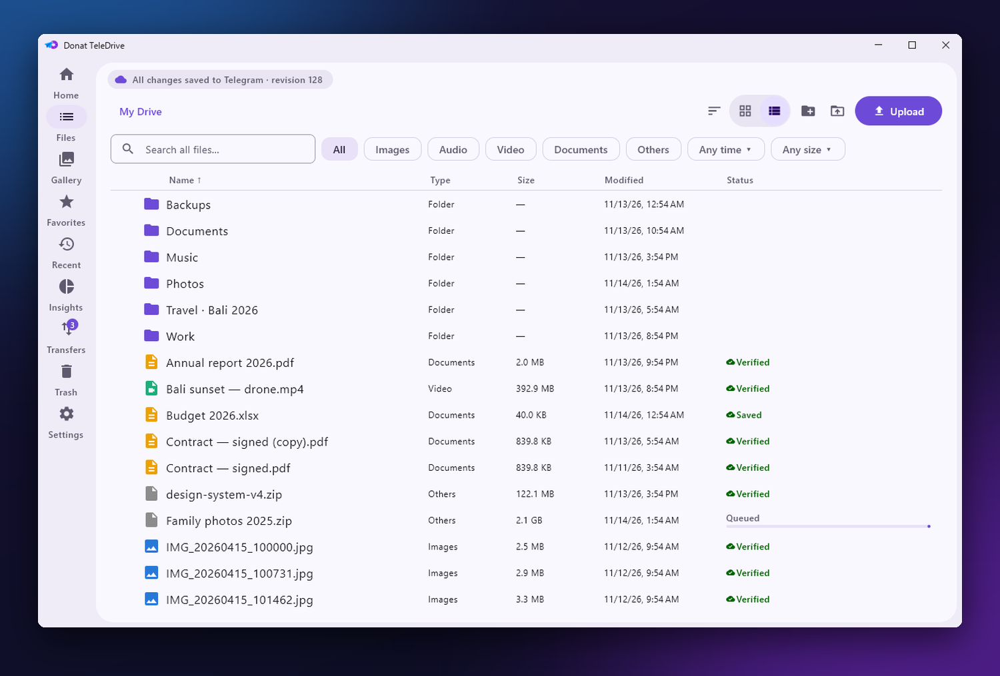
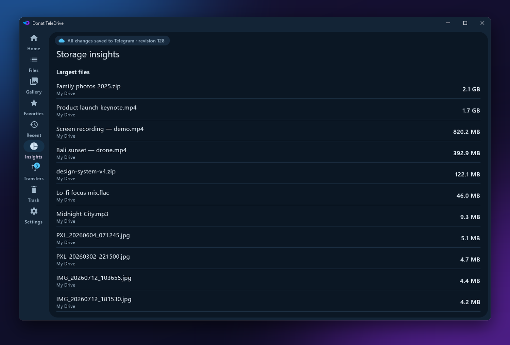
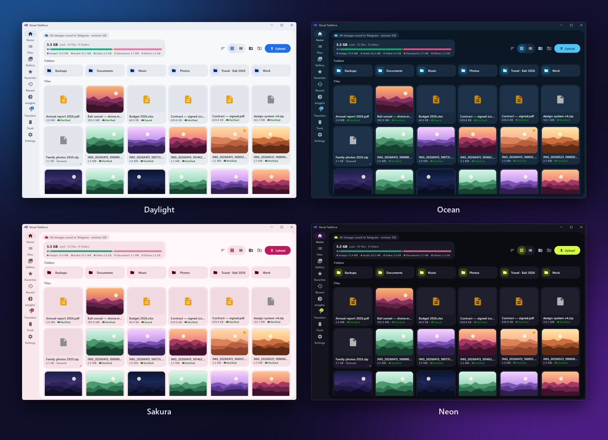
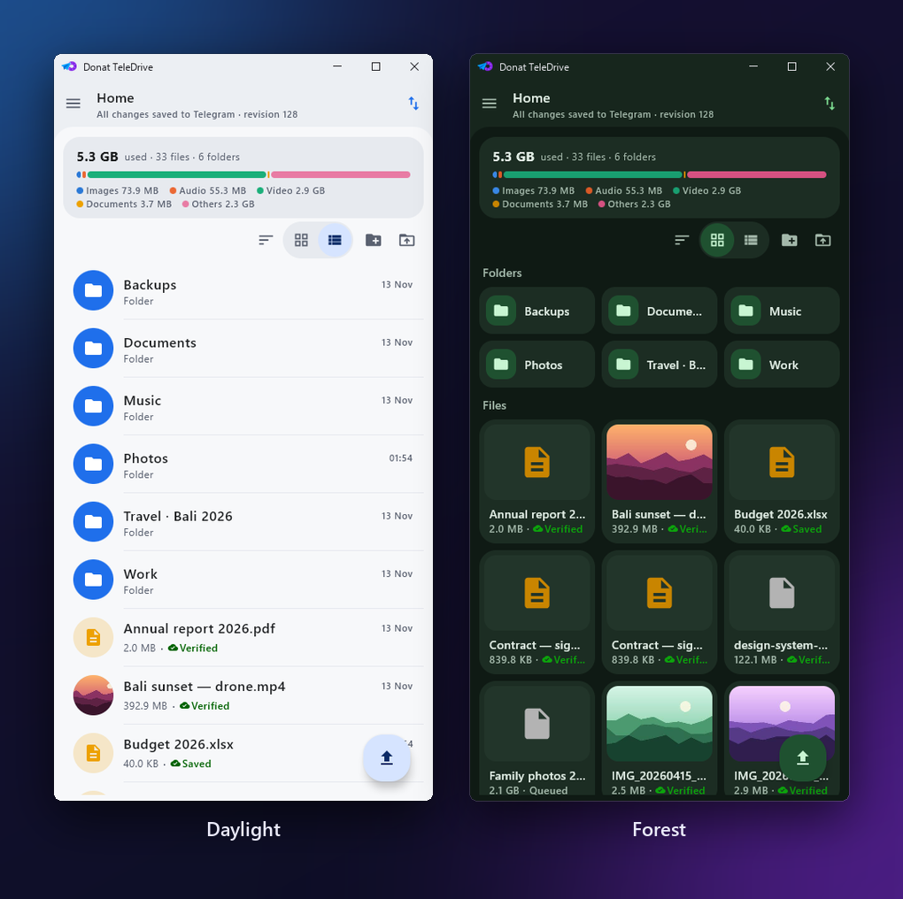
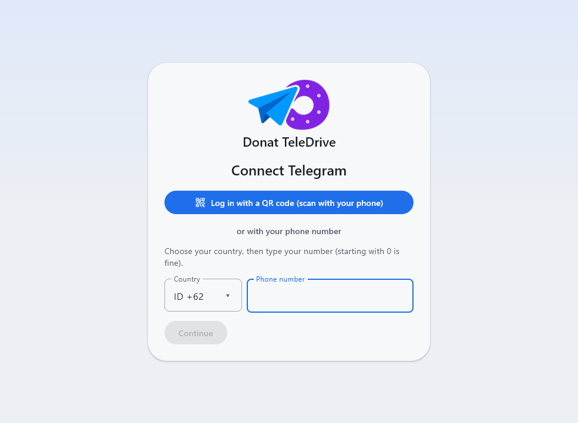

Gallery
A camera roll for your cloud
Photos and videos grouped by the day they were taken, straight from the names your phone and camera already use.
Donat TeleDrive is a beautiful, recovery-first cloud drive for Windows. Your files live in your own private Telegram channel — it looks and feels like a premium file manager.
Version 1.0.0 · Windows 10 / 11 (64-bit) · Free & open source (MIT)

No subscription, no third-party server — just your Telegram account and a file manager that takes your files seriously.
Files go to a private channel in your own Telegram account — no extra cloud account, no plan to outgrow.
The drive's index lives in Telegram too. A new PC is one login away from every folder, name and version.
SHA-256 per part and per file. "Saved" only when the cloud index lists it, "Verified" after a byte-for-byte check.
Parallel, resumable, survive restarts, respect Telegram's rate limits, split big files into 512 MiB parts.
Photos with smooth zoom, PDF, text, ZIP, audio and video — MKV, HEVC and FLAC too — plus a mini music player.
DPAPI-encrypted credentials, optional PIN, pentested local-network sharing, never a chat client.
Every screen is designed in the Android 16 / Material 3 style — rounded, calm and fast.
Photos and videos grouped by the day they were taken, straight from the names your phone and camera already use.


Zoom at the cursor, pan by dragging, flip with the arrow keys. Media plays inside the app; exotic formats use an engine fetched on demand.
Progress from confirmed bytes, live speed and time left, pause / resume / cancel per item or all at once.


Sortable details view, search with type, date and size filters, Favorites and Recent, Explorer-style selection and shortcuts.
Largest files and folders, and duplicates found by content — keep one copy, trash the rest in one click.

System, Daylight, Graphite, Ocean, AMOLED, Sepia, Forest, Sakura, Sunset, Lavender and Neon.



Three ways to run it — pick the one that fits. Java is included; there is nothing else to install.
%LOCALAPPDATA% across updatesDonat TeleDrive.exe%LOCALAPPDATA%\Donat TeleDrive, like the installerdata folder next to the exeSHA-256 checksums are listed on the release page. The app isn't code-signed yet: if Windows SmartScreen appears, choose More info → Run anyway.
Log in at my.telegram.org → API development tools and create an app. Keep the API ID and hash.
Paste the keys, then scan the QR code with the Telegram app on your phone — or use your phone number.
Name it and start dragging files in. Used it before? Your drives appear automatically.
Telegram doesn't limit the total size of a channel. Big files are split into 512 MiB parts and joined again when you download them.
Install Donat TeleDrive anywhere and log in with the same Telegram account: drives, folders and names come back from the index stored in Telegram.
They're in a private channel only your account can see and travel over Telegram's encrypted connection. End-to-end encryption with your own passphrase is on the roadmap.
Most people: the installer. Want to try without installing: the ZIP. Want to carry it on a USB stick with all its data: Portable. All three are the same app.
The files aren't code-signed yet (certificates cost money). The source is open on GitHub and every download has a SHA-256 checksum on the release page.